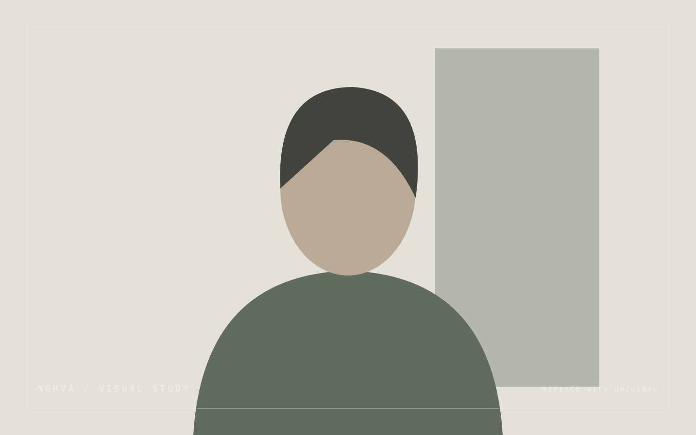
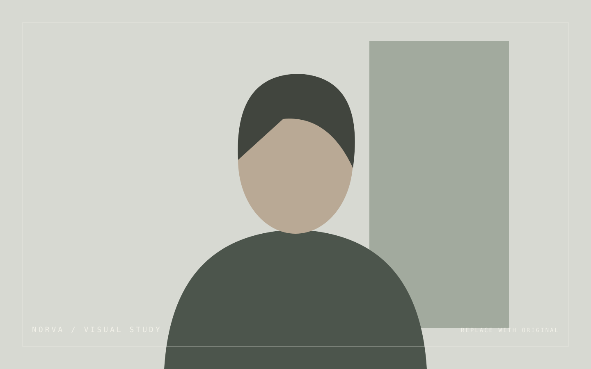

01 / IMAGE
Photography
A collection of visual observations.
Selected photographs across landscapes, people, architecture and everyday life. The final selection will be drawn from NORVA's own photographic archive.





These are temporary visual studies for layout and responsive testing, not original client or documentary work. Replace files at the same paths to retain the layout.